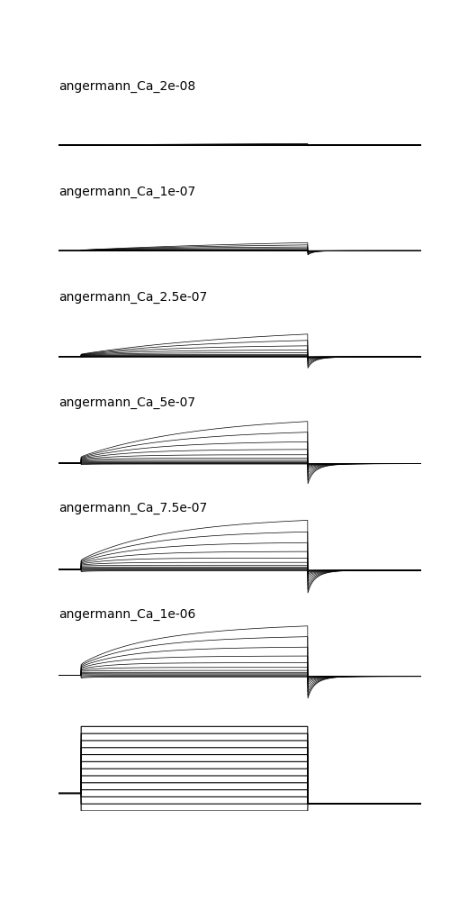
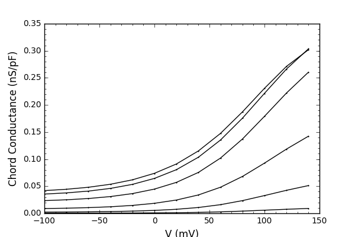
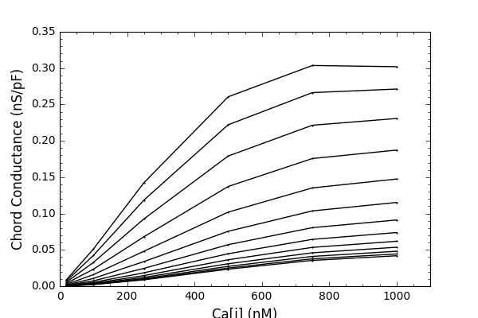
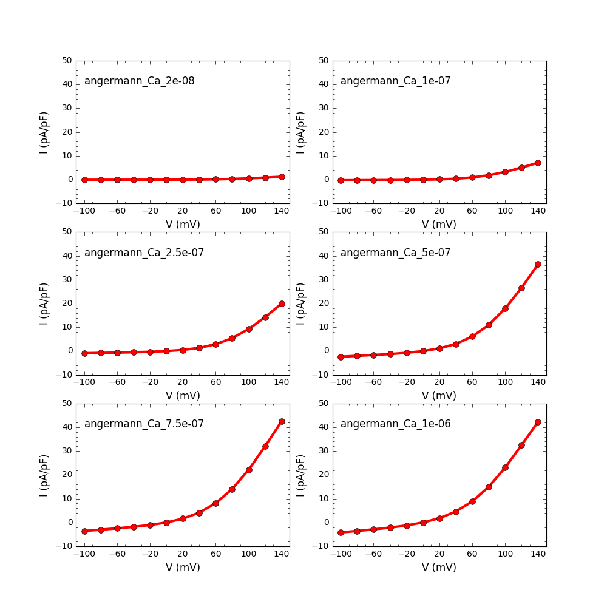
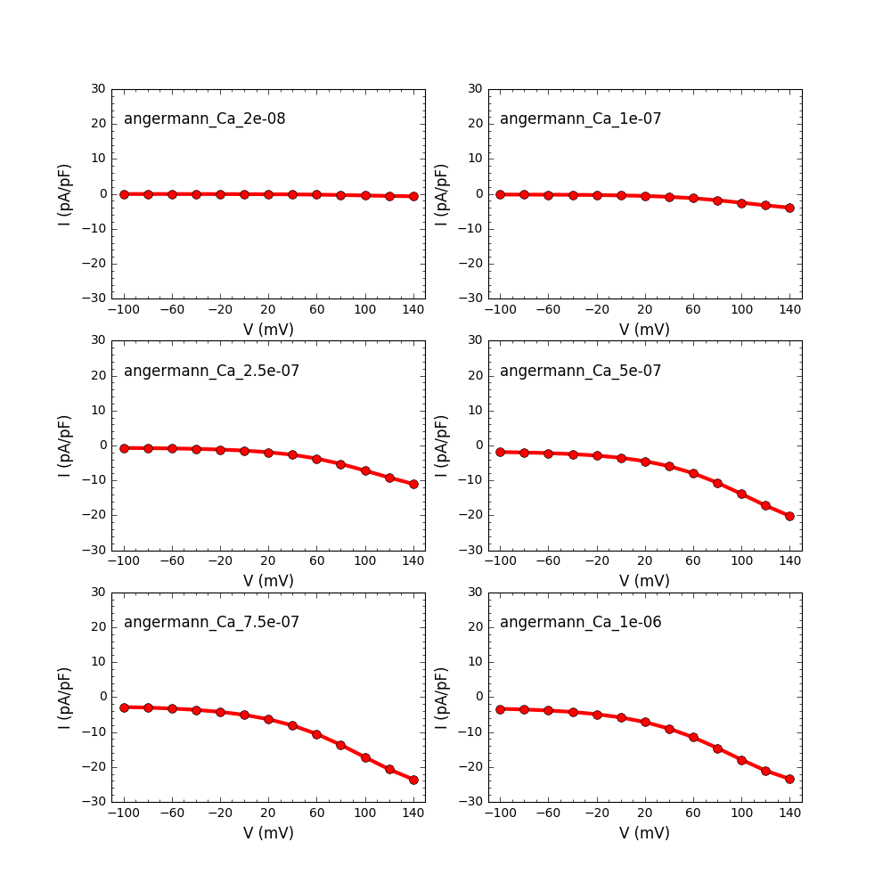

The modFoss package for ion channel analysis as described in the paper Ferneyhough GB, Thibealut CM, Dascalu SM, Harris FC (2016) ModFossa: A library for modeling ion channels using Python. J Bioinform Comput Biol 14:1642003 is available in github: https://github.com/gareth-ferneyhough/modfossa After building the python package you can run the examples provided in the samples folder. For example running python Angerman2006.py and will produce graphs like:      Note from the ModelDB administrator: When I was following the install instructions for modFoss on an ubuntu 16.04.01 in my home bin folder (/home/morse/bin) I found it helpful to export these export CPATH=/home/morse/bin/sundials-2.6.2/instdir/include/ export LIBRARY_PATH=/home/morse/bin/sundials-2.6.2/instdir/lib in addition to their suggested export LD_LIBRARY_PATH=/home/morse/bin/sundials-2.6.2/instdir/lib